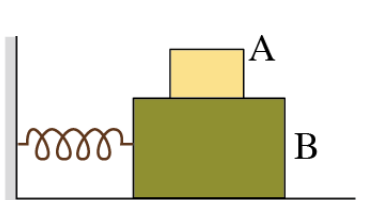
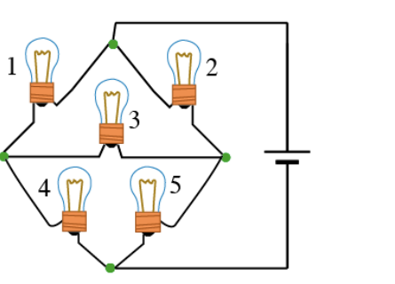
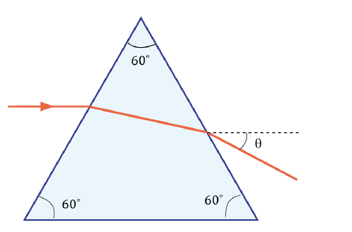
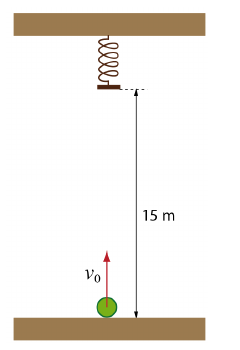
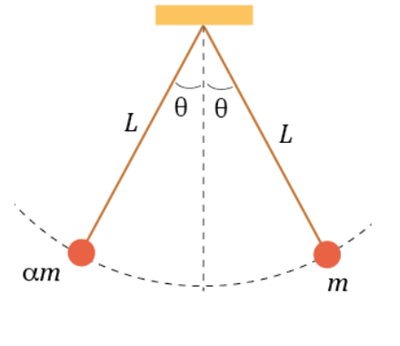
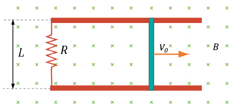

Cuestiones sobre frenado, bloques apilados sobre un muelle, bombillas y un prisma; problemas de un muelle en el techo, péndulos que chocan, inducción en una barra y, con datos, la constante y la masa de un muelle.
| documento | castellano y euskera |
|---|---|
| Cuestiones | PDF0.8 MB |
| Problemas | PDF1.2 MB |
| Hoja de respuestas (cuestiones) | PDF0.7 MB |
| Hoja de respuestas (problemas) | PDF0.9 MB |
10 puntos
Un coche se mueve a cierta velocidad cuando frena bruscamente deslizando sus ruedas sobre el suelo hasta detenerse completamente. Sabiendo que la distancia de frenado ha sido d = 10\,\mathrm{m} y suponiendo que la aceleración es constante durante el frenado, calcular cuál sería la distancia de frenado en los tres siguientes supuestos: (a) la masa del coche se duplica, (b) el coeficiente de rozamiento se reduce a la mitad, (c) la velocidad inicial del coche se duplica.
10 puntos
Se tienen dos bloques, uno encima de otro, como se muestra en la figura. El bloque inferior está enganchado a un muelle y puede deslizar sin rozamiento por el suelo. Sin embargo, existe rozamiento entre el bloque superior y el inferior, con coeficiente de rozamiento estático \mu_s = 0.40. La constante elástica del muelle es K = 6.0\,\mathrm{N/m}, la masa inferior es M_B = 1\,\mathrm{kg} y la superior es M_A = 0.5\,\mathrm{kg}. Suponiendo que los bloques se mueven (oscilan) solidariamente como un solo bloque:
¿cuál es la frecuencia de oscilación?
determinar el valor máximo de la amplitud de oscilación para que puedan oscilar solidariamente.

10 puntos
Tenemos cinco bombillas idénticas conectadas a una batería como se muestra en la figura. La luz que emite una bombilla es proporcional al cuadrado de la intensidad que pasa por ella. Téngase en cuenta que, si se conectara a la batería una sola de esas bombillas, emitiría una cantidad de luz P.
Determinar la cantidad total de luz emitida por el conjunto de 5 bombillas.
Si se funden las bombillas 1 y 5, ¿cuál es la cantidad de luz emitida por el conjunto de bombillas?
Indicación: considerar que cada bombilla es como una resistencia. Cuando una bombilla se funde no pasa corriente por ella, es decir, se rompe esa rama del circuito.

10 puntos
La figura muestra un prisma triangular equilátero de vidrio de índice de refracción n = 1.5. En dicho prisma incide un rayo de luz horizontalmente, es decir, en una dirección paralela a la cara inferior. Determinar con qué ángulo \theta sale el rayo del prisma (el ángulo \theta se mide con respecto a la horizontal).

25 puntos
Un objeto se lanza desde el suelo verticalmente hacia arriba con cierta velocidad inicial v_0. Sabiendo que en un determinado instante de su ascenso tiene una velocidad v y que 0.4 segundos después está 6 metros más arriba y su velocidad es 0.65\,v_0, determinar:
la velocidad v;
la velocidad inicial v_0.
Al llegar a los 15 metros de altura choca contra un muelle de K = 4800\,\mathrm{N/m} que cuelga del techo. Determinar:
la energía cinética del objeto al llegar al muelle;
la distancia que se comprime el muelle, suponiendo que en el choque contra el muelle no se pierde energía.
(Datos: masa del objeto: 2\,\mathrm{kg}; considerar g = 10\,\mathrm{m/s^2})

25 puntos
Se tienen dos péndulos simples de longitud L, uno con masa m y otro con masa \alpha m, que cuelgan del mismo punto. En el instante inicial están en reposo, pero desviados de la posición de equilibrio cada uno hacia un lado, como se muestra en la figura. En ese instante se sueltan los péndulos y se pide:
el tiempo que tardan en chocar los péndulos. Para ello, utilizar la fórmula T = T_0\left(1 + \frac{\theta^2}{16}\right), que determina de forma aproximada (error < 0.1\,\%) el periodo (T) de un péndulo simple para amplitudes de hasta 40^\circ en función del periodo del péndulo para oscilaciones pequeñas (T_0) y de la amplitud de oscilación (\theta) en radianes;
la velocidad de cada péndulo en el momento del choque.
Considerando que el choque es elástico, determinar para el caso \alpha = 3:
la velocidad de cada péndulo después del choque;
la desviación angular máxima de cada péndulo.
Si \alpha fuese muy grande o muy pequeño, después del choque ambos péndulos se desviarían hacia el mismo lado.
(Datos: m = 4\,\mathrm{kg}; L = 2\,\mathrm{m}; \cos\theta = 0.9; considerar g = 10\,\mathrm{m/s^2})

25 puntos
Se tiene una barra conductora de masa m y longitud L que se mueve en un plano horizontal sobre dos raíles conductores sin ninguna fricción. Por otra parte, un cable conductor de resistencia R conecta los dos raíles de forma que cable, raíles y barra forman un circuito cerrado. Este circuito está situado en un campo magnético \vec B uniforme dirigido hacia dentro del papel. A la barra se le proporciona una velocidad inicial hacia la derecha \vec v_0 y después se la deja libre. Calcular:
la FEM inducida en el circuito en el instante inicial, cuando la velocidad de la barra es \vec v_0;
la fuerza que se ejerce sobre la barra en ese instante inicial (indicando módulo, dirección y sentido);
deducir la expresión que determina la fuerza que se ejerce sobre la barra en función de la velocidad \vec v de la barra;
hallar la expresión que determina la velocidad de la barra en función del tiempo.
(Datos: m = 0.1\,\mathrm{kg}, L = 0.5\,\mathrm{m}, B = 0.5\,\mathrm{T}, R = 2\,\Omega, v_0 = 2\,\mathrm{m/s})

25 puntos
El periodo (T) de las oscilaciones de un muelle viene determinado por la siguiente ecuación:
T = 2\pi\sqrt{\frac{M}{K}} \qquad (1)
donde K es la constante elástica del muelle y M es el valor de la masa que cuelga del muelle, si no se tiene en cuenta la masa del muelle.
Sin embargo, si se tiene en cuenta la masa del muelle, el valor de M en la ecuación (1) debe ser sustituido por M + \tfrac{1}{3}m, donde M es la masa que cuelga del muelle y m es la masa del muelle.
Para un muelle de masa m y constante elástica K se ha medido el tiempo que tarda en hacer 10 oscilaciones para diferentes masas colgadas (M). Los resultados obtenidos se muestran en la siguiente tabla:
| M (g) | 20 | 40 | 60 | 80 | 110 |
|---|---|---|---|---|---|
| Tiempo de 10 oscilaciones (s) | 6.00 | 6.93 | 8.00 | 8.94 | 10.4 |
A partir de la ecuación (1) y teniendo en cuenta que el muelle tiene masa, determinar la expresión del periodo al cuadrado en función de M, K y m.
De la tabla de datos experimentales, determinar para cada masa M el valor del periodo al cuadrado (T^2).
Representar, en la zona reservada para ello en la hoja de respuestas, los valores obtenidos del periodo al cuadrado en función de la masa M.
Obtener la pendiente, p, y la ordenada en el origen, c, de la recta que mejor se ajusta a estos puntos.
Determinar las ecuaciones que permiten determinar la constante K del muelle y el valor de la masa del muelle m a partir de los valores de p y c obtenidos en el ajuste del apartado anterior. Usar esas fórmulas para determinar los valores de K y m.
Hacer una estimación de la incertidumbre (error) de la pendiente, \Delta p, y de la ordenada en el origen, \Delta c, de la recta del ajuste realizado en el apartado (d).
Calcular el error que estos errores (\Delta p, \Delta c) producen en los valores de K y de m, es decir, determinar \Delta K y \Delta m.